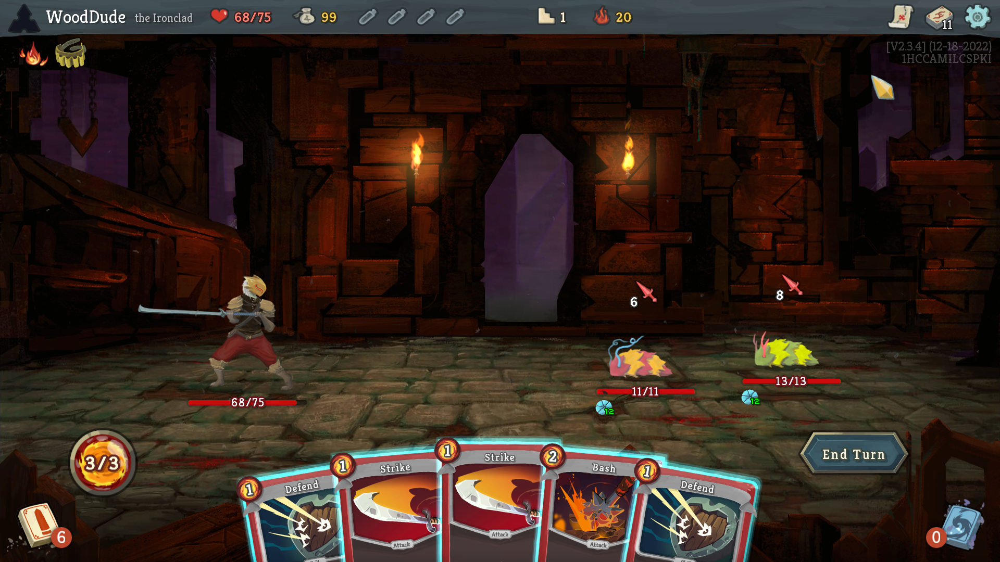
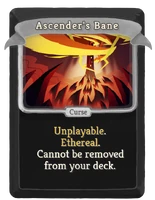

Cel
Celem gry jest przejście 3 aktów złożonych łącznie z 50 pięter. Każdy akt zakończony jednym z trzech potężnych przeciwników zwanych bossami.
Act 1
Act 2
Act 3
Jeśli gracz zbierze 3 klucze, odblokowuje on dostęp do aktu 4 i walkę z finałowym bossem, najtrudniejszym wrogiem w grze.
- Czerwony klucz - wymaga użycia ogniska.
- Zielony klucz - wymaga pokonania silniejszej wersji elitarnego wroga.
- Niebieski klucz - wymaga wybrania go ze skrzyni zamiast reliktu.
Act 4
Walka
Walka odbywa się poprzez zagrywanie kart. W każdej turze gracz otrzymuje określoną ilość punktów energii (domyślnie 3). Nad każdym przeciwnikiem ukazana jest ich intencja, mowiąca co planują wykonać.Gracz oraz wrogowie mogą atakować, blokować lub nakładać pozytywne jak i negatywne efekty.
Po każdej walce gracz otrzymuje złoto, wybór karty, czasami miskturę, a jeśli był to elitarny przeciwnik wśród nagród pojawia się relikt.
Po pokonaniu bossa, gracz jest w pełni uzdrawiany i wybiera spośród 3 reliktów, które mają unikatowe i dosyć przydatne efekty kosztem posiadania jakiejś wady. 
Mapa
Po każdej walce gracz wybiera następne piętro. Każdy z symboli mówi co występuje na danym piętrze:
- Unknown - przypadkowe zdarzenie, może także być jednym z innych symboli (Merchant, Treasure, Enemy).
- Merchant- sklep posiadający karty, relikt i misktury. Pozwala także na usunięcie jednej karty z talii (raz na sklep).
- Treasure - skrzynia zawierająca relikt oraz złoto.
- Rest - ognisko pozwalające ulepszyć kartę lub odzyskać część utraconego zdrowia.
- Enemy - zwykła walka.
- Elite - walka z silniejszym przeciwnikiem, oferujące lepsze nagrody.
Ascension
Po pierwszej wygranej jako dana postać, gracz odblokowuje system o nazwie "Ascension". Jest to stopniowe zwiększanie poziomu trudności poprzez coraz to bardziej niebezpieczne modyfikatory.
Każdy kolejny stopień jest odblokowywany poprzez wygranie na najwyższym obecnie dostępnym.
- Większa ilość elitarnych przeciwników.
- Zwykli przeciwnicy zadają więcej obrażeń.
- Elitarni przeciwnicy zadają więcej obrażeń.
- Bossowie zadają więcej obrażeń.
- Po pokonaniu bossa, gracz jest leczony o mniejszą ilość zdrowia.
- Na początku wyprawy gracz zaczyna z częściową utratą zdrowia.
- Zwykli przeciwnicy mają więcej zdrowia.
- Elitarni przeciwnicy mają więcej zdrowia.
- Bossowie mają więcej zdrowia.
- Na początku wyprawy gracz otrzymuje poniższą klątwę. 
- Gracz posiada o jedno miejsce mniej na przechowywanie mikstur.
- Mniejsza szansa, że znalezione karty będą już ulepszone.
- Bossowie dają mniejszą ilość złota.
- Gracz posiada mniej maksymalnego zdrowia.
- Przypadkowe zdarzenia są mniej fortunne dla gracza.
- Sklepy są bardziej kosztowne.
- Zwykli przeciwnicy otrzymują bardziej wymagający zestaw ruchów.
- Elitarni przeciwnicy otrzymują bardziej wymagający zestaw ruchów.
- Bossowie otrzymują bardziej wymagający zestaw ruchów.
- Po pokonaniu bossa w akcie 3, natychmiast następuje walka z jednym z pozostałych bossów.